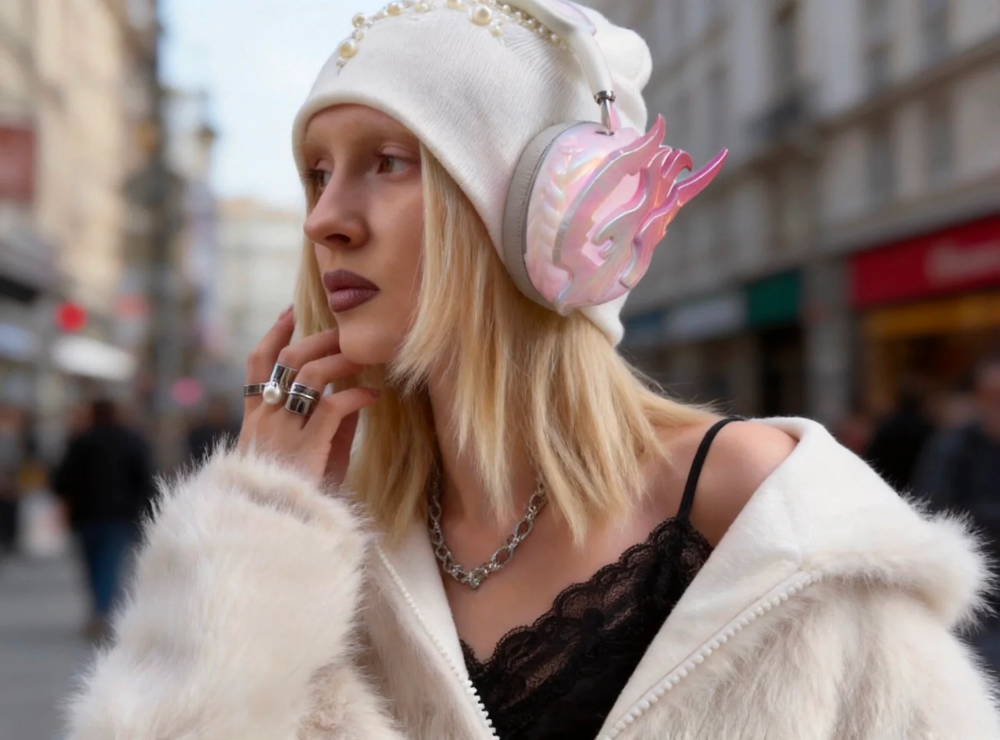
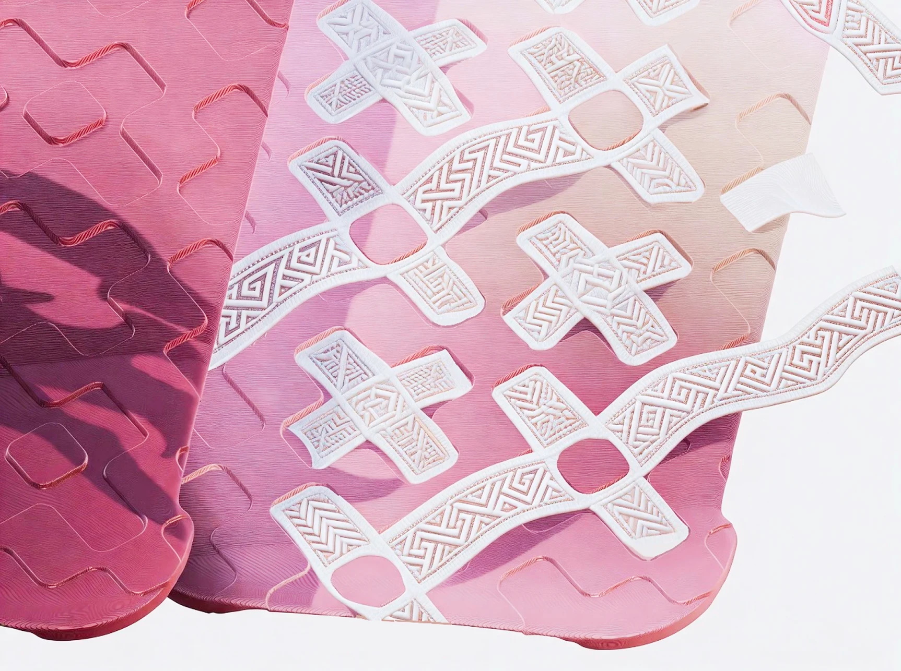
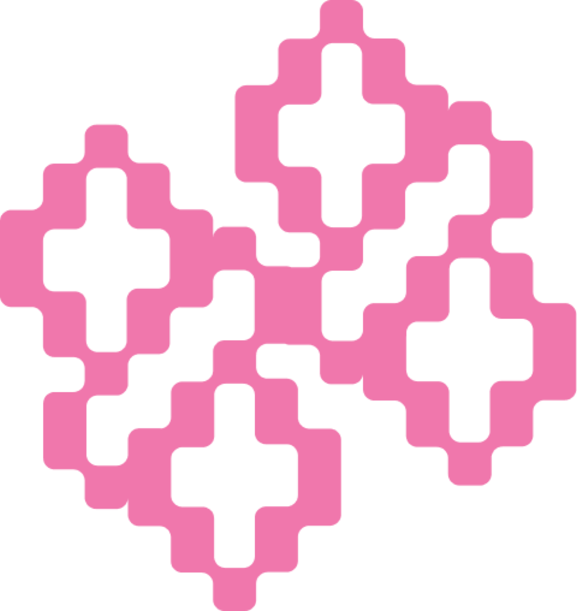

Headphone case
让音乐，长出羽翼。

THE BLOOM COLLECTION
让纹样走出织物，陪你走进生活。
Headphone case
让音乐，长出羽翼。
AirPods case
小小一方，藏着守护。
Phone case & stand
把喜欢，握在手里。
Bag charm
带上你的守护伙伴。
Watch band
让时间，织进日常。

FEATHER + LAND
羽境，意为「羽毛之地」。我们从壮锦传统鸟纹中汲取灵感，以像素语言重构古老的守护符号，让文化记忆化作可以随身佩戴的配饰。
你的第一只守护鸟。
Your first guardian bird.
源于壮锦
在品牌的研究中，壮锦与当地人的婚嫁、赠礼和日常生活紧密相连。纹样所承载的祝愿，构成了羽境「守护」概念的起点。
羽境选择鸟纹与几何结构，将有方向感的羽翼、对称的构图与重复的秩序，转译成当代配饰的形态。

保留结构，重构语言，再让它生长为整个系列。
从传统纹样的对称关系与几何秩序出发，提取轮廓，以圆角像素建立清晰、亲近的基础符号。
一套设计语言，也可以有不同的性格。
